MSc dissertation progress report
24 July 2026
Age-associated co-expression networks and genomic ERV annotations in GTEx v10 skeletal muscle.
| Step | Setting / output |
|---|---|
| Count filter | row sum >= 50 |
| Transformation | DESeq2 VST
(design = ~ 1) |
| Network | signed |
| Soft-thresholding power | 6 |
| Minimum module size | 30 |
| Merge cut height | 0.25 |
| Detected modules | 32 + grey |
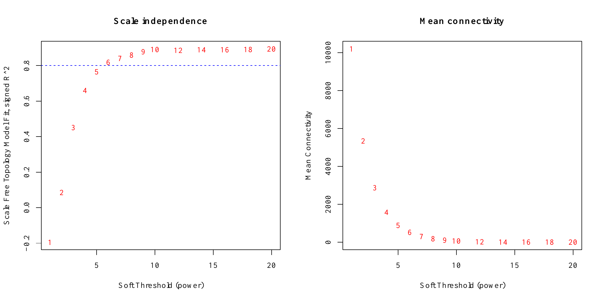
Soft-thresholding analysis. Power 6 was selected for the signed network.
Age was encoded as six ordered decade groups (20-29 to 70-79).
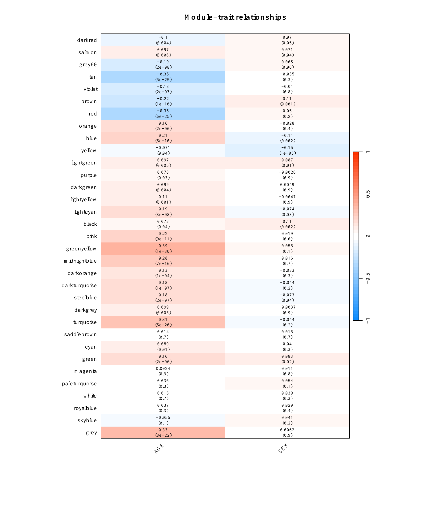
Module eigengene correlations with AGE and SEX.
| Candidate module | Genes | AGE correlation | AGE P value |
|---|---|---|---|
| greenyellow | 445 | 0.387 | 1.18e-30 |
| red | 630 | -0.350 | 6.17e-25 |
| darkgreen | 119 | 0.099 | 4.45e-03 |
| turquoise | 2,608 | 0.313 | 4.85e-20 |
| midnightblue | 328 | 0.277 | 6.79e-16 |
| blue | 2,499 | 0.215 | 5.32e-10 |
| pink | 606 | 0.224 | 8.68e-11 |
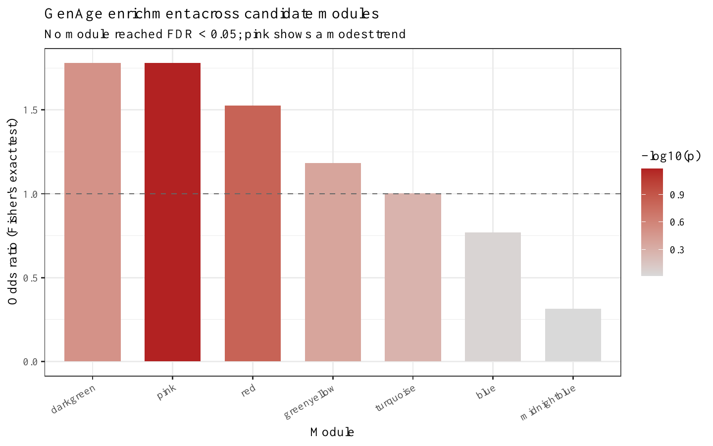
GenAge enrichment across the seven candidate modules.
| Module | GenAge overlap | Odds ratio | FDR |
|---|---|---|---|
| pink | 10 | 1.779 | 0.466 |
| red | 9 | 1.526 | 0.528 |
| darkgreen | 2 | 1.779 | 0.735 |
| greenyellow | 5 | 1.182 | 0.738 |
| turquoise | 25 | 1.003 | 0.738 |
| blue | 19 | 0.771 | 0.958 |
| midnightblue | 1 | 0.314 | 0.958 |
Promoter-proximal region: TSS -2,000 bp to +500 bp.
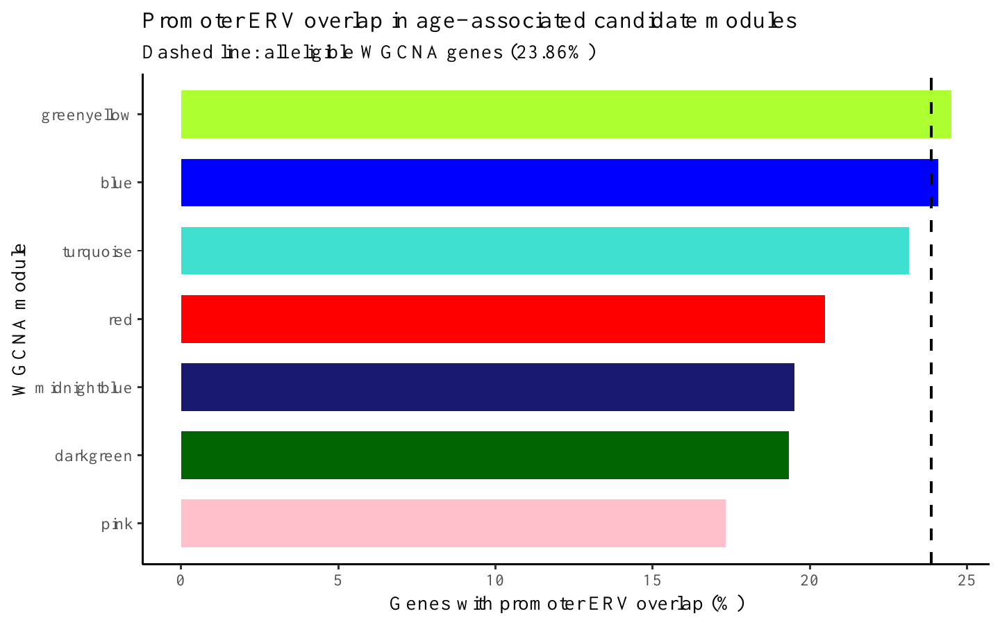
Promoter ERV overlap by candidate module.
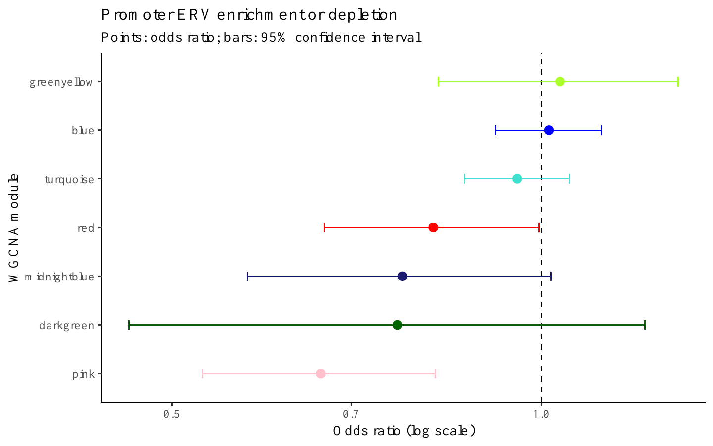
Fisher’s exact tests for promoter ERV enrichment or depletion.
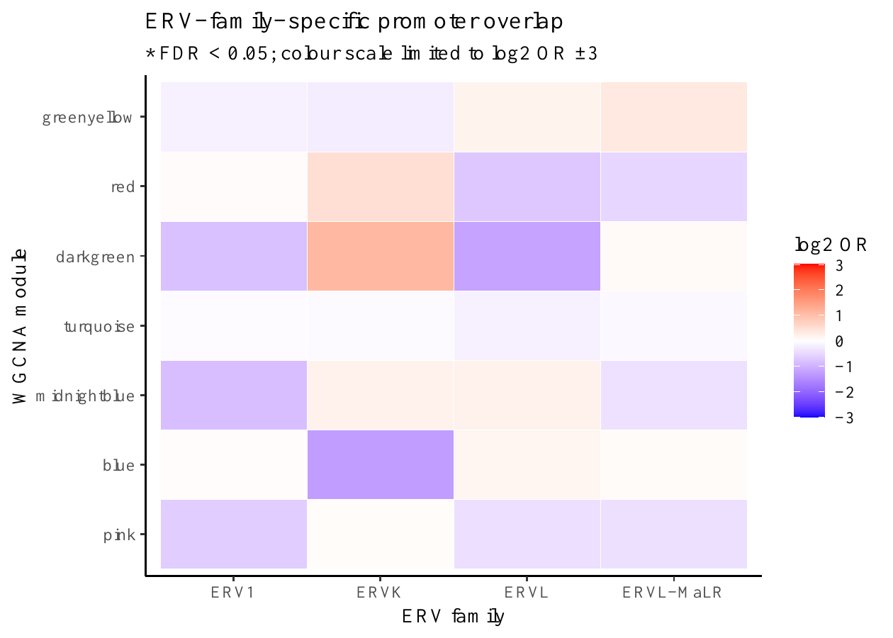
Family-specific promoter overlap. No family-module pair reached FDR < 0.05.
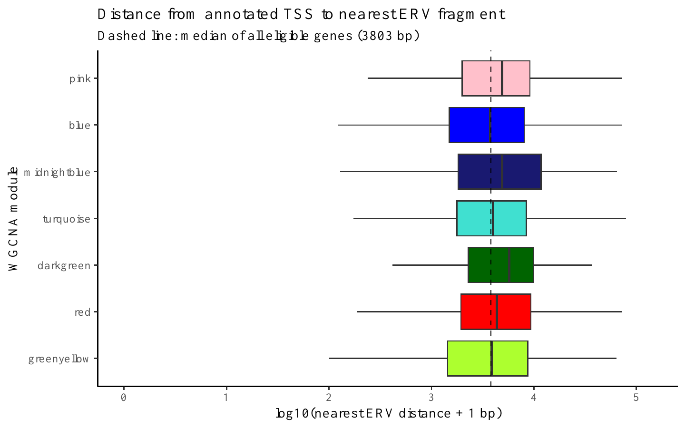
Distance from TSS to the nearest annotated ERV fragment.
| Module | Promoter ERV (%) | OR | FDR | Median nearest ERV (bp) | Distance FDR |
|---|---|---|---|---|---|
| greenyellow | 24.5 | 1.036 | 0.783 | 3,877 | 0.754 |
| red | 20.5 | 0.817 | 0.157 | 4,364 | 0.00723 |
| darkgreen | 19.3 | 0.763 | 0.492 | 5,739 | 0.0212 |
| turquoise | 23.2 | 0.956 | 0.525 | 3,992 | 0.0377 |
| midnightblue | 19.5 | 0.770 | 0.157 | 4,892 | 0.00348 |
| blue | 24.1 | 1.014 | 0.783 | 3,742 | 0.121 |
| pink | 17.3 | 0.661 | 0.00060 | 4,884 | 0.00268 |
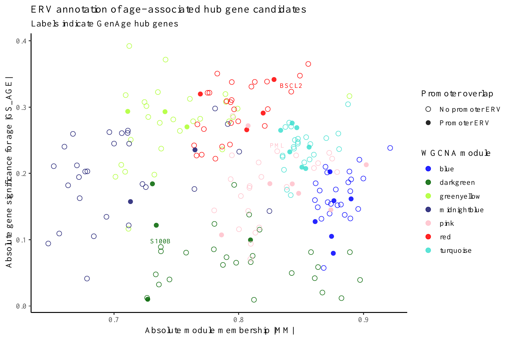
Module membership, age significance and promoter ERV status.
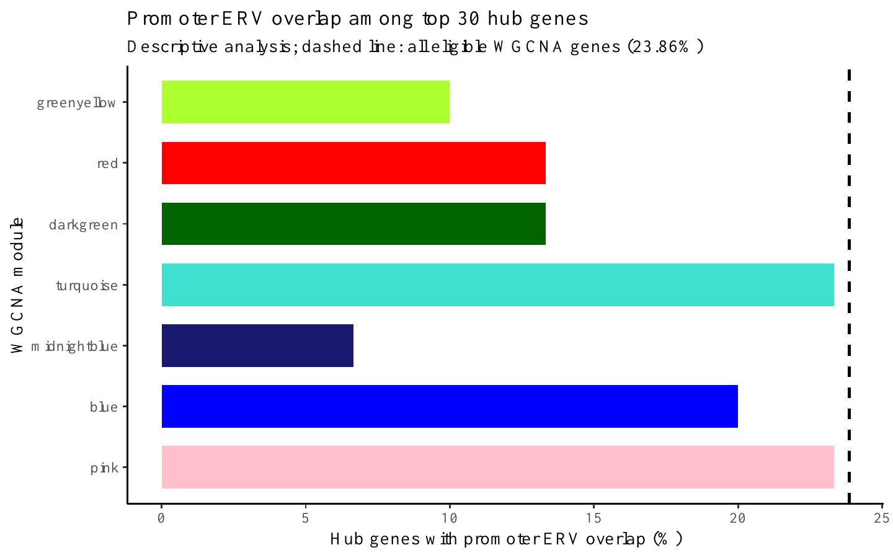
Promoter ERV overlap among the top 30 hubs per module.
| GenAge hub | Module | Rank | MM | GS-AGE | Promoter ERV | Nearest ERV |
|---|---|---|---|---|---|---|
| BSCL2 | red | 3 | 0.842 | -0.323 | No | 9,815 bp |
| S100B | darkgreen | 24 | 0.738 | 0.089 | No | 2,010 bp |
| PML | pink | 12 | 0.831 | 0.233 | No | 1,555 bp |
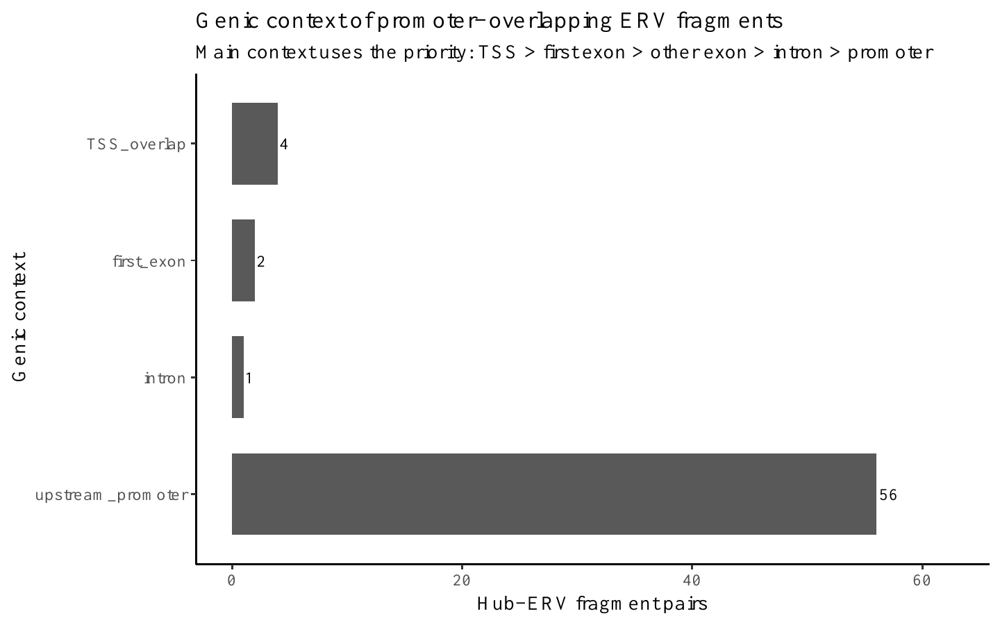
Most promoter-overlapping hub-ERV pairs were upstream of the annotated TSS.
Roadmap E100 (Psoas muscle) and E108 (Skeletal muscle male).
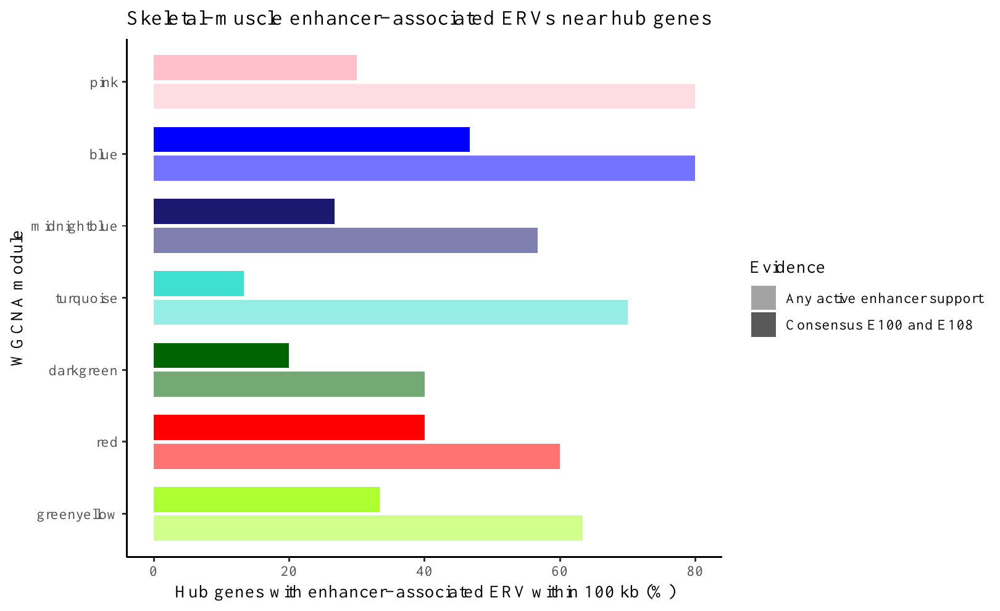
Hub genes with enhancer-associated ERVs within 100 kb.
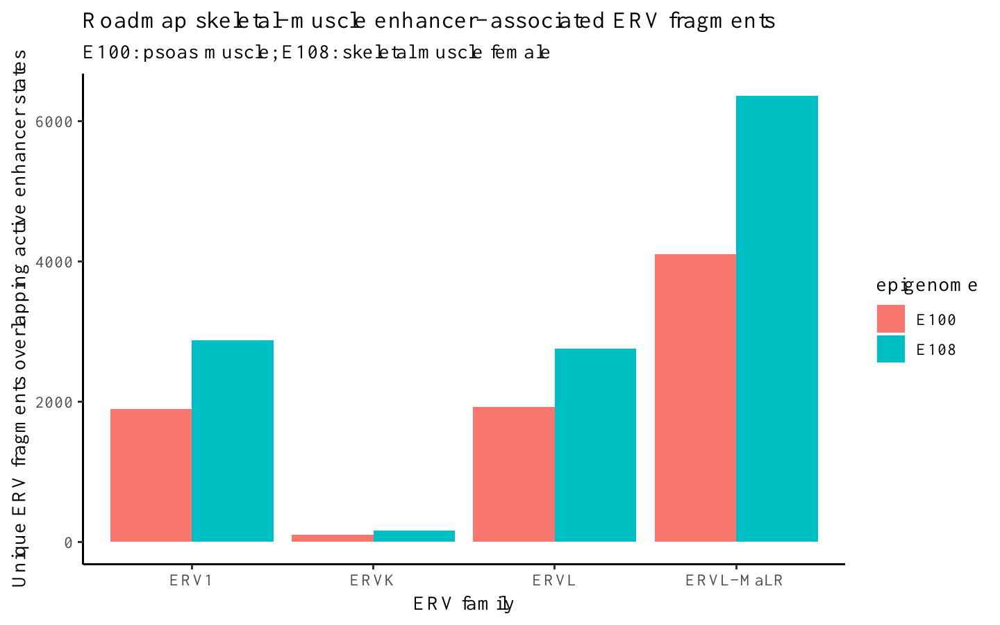
Unique enhancer-associated ERV fragments by family and epigenome.
| Module | Hubs near enhancer ERV (%) | Consensus support (%) |
|---|---|---|
| greenyellow | 63.3 | 33.3 |
| red | 60.0 | 40.0 |
| darkgreen | 40.0 | 20.0 |
| turquoise | 70.0 | 13.3 |
| midnightblue | 56.7 | 26.7 |
| blue | 80.0 | 46.7 |
| pink | 80.0 | 30.0 |
| Completed | Next |
|---|---|
| GTEx preprocessing | Postmortem covariate assessment |
| WGCNA and module-trait analysis | ERV expression quantification |
| GenAge annotation | Multivariable validation |
| Promoter and nearest-ERV annotation | Final candidate prioritisation |
| Hub and Roadmap enhancer integration | Dissertation figures and interpretation |
Interpretation: Current ERV results are reference-genome positional annotations; they do not demonstrate ERV expression or regulatory activity. The source files are GTEx v10, although the repository README still contains an outdated v8 label.